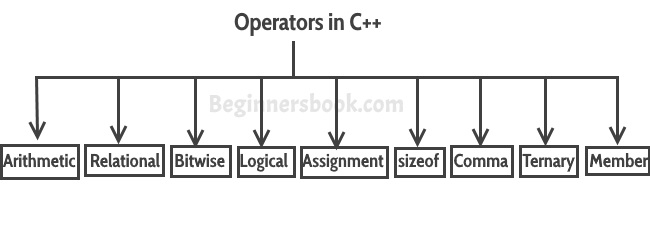

Operator represents an action. For example + is an operator that represents addition. An operator works on two or more operands and produce an output. For example 3+4+5 here + operator works on three operands and produce 12 as output.
Types of Operators in C++

1) Basic Arithmetic Operators
2) Assignment Operators
3) Auto-increment and Auto-decrement Operators
4) Logical Operators
5) Comparison (relational) operators
6) Bitwise Operators
7) Ternary Operator
1) Basic Arithmetic Operators
Basic arithmetic operators are: +, -, *, /, %
+ is for addition.
– is for subtraction.
* is for multiplication.
/ is for division.
% is for modulo.
Note: Modulo operator returns remainder, for example 20 % 5 would return 0
Example of Arithmetic Operators
#include <iostream>
using namespace std;
int main(){
int num1 = 240;
int num2 = 40;
cout<<"num1 + num2: "<<(num1 + num2)<<endl;
cout<<"num1 - num2: "<<(num1 - num2)<<endl;
cout<<"num1 * num2: "<<(num1 * num2)<<endl;
cout<<"num1 / num2: "<<(num1 / num2)<<endl;
cout<<"num1 % num2: "<<(num1 % num2)<<endl;
return 0;
}
Output:
num1 + num2: 280 num1 - num2: 200 num1 * num2: 9600 num1 / num2: 6 num1 % num2: 0
2) Assignment Operators
Assignments operators in C++ are: =, +=, -=, *=, /=, %=
num2 = num1 would assign value of variable num1 to the variable.
num2+=num1 is equal to num2 = num2+num1
num2-=num1 is equal to num2 = num2-num1
num2*=num1 is equal to num2 = num2*num1
num2/=num1 is equal to num2 = num2/num1
num2%=num1 is equal to num2 = num2%num1
Example of Assignment Operators
#include <iostream>
using namespace std;
int main(){
int num1 = 240;
int num2 = 40;
num2 = num1;
cout<<"= Output: "<<num2<<endl;
num2 += num1;
cout<<"+= Output: "<<num2<<endl;
num2 -= num1;
cout<<"-= Output: "<<num2<<endl;
num2 *= num1;
cout<<"*= Output: "<<num2<<endl;
num2 /= num1;
cout<<"/= Output: "<<num2<<endl;
num2 %= num1;
cout<<"%= Output: "<<num2<<endl;
return 0;
}
Output:
= Output: 240 += Output: 480 -= Output: 240 *= Output: 57600 /= Output: 240 %= Output: 0
3) Auto-increment and Auto-decrement Operators
++ and —
num++ is equivalent to num=num+1;
num–- is equivalent to num=num-1;
Example of Auto-increment and Auto-decrement Operators
#include <iostream>
using namespace std;
int main(){
int num1 = 240;
int num2 = 40;
num1++; num2--;
cout<<"num1++ is: "<<num1<<endl;
cout<<"num2-- is: "<<num2;
return 0;
}
Output:
num1++ is: 241 num2-- is: 39
4) Logical Operators
Logical Operators are used with binary variables. They are mainly used in conditional statements and loops for evaluating a condition.
Logical operators in C++ are: &&, ||, !
Let’s say we have two boolean variables b1 and b2.
b1&&b2 will return true if both b1 and b2 are true else it would return false.
b1||b2 will return false if both b1 and b2 are false else it would return true.
!b1 would return the opposite of b1, that means it would be true if b1 is false and it would return false if b1 is true.
Example of Logical Operators
#include <iostream>
using namespace std;
int main(){
bool b1 = true;
bool b2 = false;
cout<<"b1 && b2: "<<(b1&&b2)<<endl;
cout<<"b1 || b2: "<<(b1||b2)<<endl;
cout<<"!(b1 && b2): "<<!(b1&&b2);
return 0;
}
Output:
b1 && b2: 0 b1 || b2: 1 !(b1 && b2): 1
5) Relational operators
We have six relational operators in C++: ==, !=, >, <, >=, <=
== returns true if both the left side and right side are equal
!= returns true if left side is not equal to the right side of operator.
> returns true if left side is greater than right.
< returns true if left side is less than right side.
>= returns true if left side is greater than or equal to right side.
<= returns true if left side is less than or equal to right side.
Example of Relational operators
#include <iostream>
using namespace std;
int main(){
int num1 = 240;
int num2 =40;
if (num1==num2) {
cout<<"num1 and num2 are equal"<<endl;
}
else{
cout<<"num1 and num2 are not equal"<<endl;
}
if( num1 != num2 ){
cout<<"num1 and num2 are not equal"<<endl;
}
else{
cout<<"num1 and num2 are equal"<<endl;
}
if( num1 > num2 ){
cout<<"num1 is greater than num2"<<endl;
}
else{
cout<<"num1 is not greater than num2"<<endl;
}
if( num1 >= num2 ){
cout<<"num1 is greater than or equal to num2"<<endl;
}
else{
cout<<"num1 is less than num2"<<endl;
}
if( num1 < num2 ){
cout<<"num1 is less than num2"<<endl;
}
else{
cout<<"num1 is not less than num2"<<endl;
}
if( num1 <= num2){
cout<<"num1 is less than or equal to num2"<<endl;
}
else{
cout<<"num1 is greater than num2"<<endl;
}
return 0;
}
Output:
num1 and num2 are not equal num1 and num2 are not equal num1 is greater than num2 num1 is greater than or equal to num2 num1 is not less than num2 num1 is greater than num2
6) Bitwise Operators
There are six bitwise Operators: &, |, ^, ~, <<, >>
num1 = 11; /* equal to 00001011*/ num2 = 22; /* equal to 00010110 */
Bitwise operator performs bit by bit processing.
num1 & num2 compares corresponding bits of num1 and num2 and generates 1 if both bits are equal, else it returns 0. In our case it would return: 2 which is 00000010 because in the binary form of num1 and num2 only second last bits are matching.
num1 | num2 compares corresponding bits of num1 and num2 and generates 1 if either bit is 1, else it returns 0. In our case it would return 31 which is 00011111
num1 ^ num2 compares corresponding bits of num1 and num2 and generates 1 if they are not equal, else it returns 0. In our example it would return 29 which is equivalent to 00011101
~num1 is a complement operator that just changes the bit from 0 to 1 and 1 to 0. In our example it would return -12 which is signed 8 bit equivalent to 11110100
num1 << 2 is left shift operator that moves the bits to the left, discards the far left bit, and assigns the rightmost bit a value of 0. In our case output is 44 which is equivalent to 00101100
Note: In the example below we are providing 2 at the right side of this shift operator that is the reason bits are moving two places to the left side. We can change this number and bits would be moved by the number of bits specified on the right side of the operator. Same applies to the right side operator.
num1 >> 2 is right shift operator that moves the bits to the right, discards the far right bit, and assigns the leftmost bit a value of 0. In our case output is 2 which is equivalent to 00000010
Example of Bitwise Operators
#include <iostream>
using namespace std;
int main(){
int num1 = 11; /* 11 = 00001011 */
int num2 = 22; /* 22 = 00010110 */
int result = 0;
result = num1 & num2;
cout<<"num1 & num2: "<<result<<endl;
result = num1 | num2;
cout<<"num1 | num2: "<<result<<endl;
result = num1 ^ num2;
cout<<"num1 ^ num2: "<<result<<endl;
result = ~num1;
cout<<"~num1: "<<result<<endl;
result = num1 << 2;
cout<<"num1 << 2: "<<result<<endl;
result = num1 >> 2;
cout<<"num1 >> 2: "<<result;
return 0;
}
Output:
num1 & num2: 2 num1 | num2: 31 num1 ^ num2: 29 ~num1: -12 num1 << 2: 44 num1 >> 2: 2
7) Ternary Operator
This operator evaluates a boolean expression and assign the value based on the result.
Syntax:
variable num1 = (expression) ? value if true : value if false
If the expression results true then the first value before the colon (:) is assigned to the variable num1 else the second value is assigned to the num1.
Example of Ternary Operator
#include <iostream>
using namespace std;
int main(){
int num1, num2; num1 = 99;
/* num1 is not equal to 10 that's why
* the second value after colon is assigned
* to the variable num2
*/
num2 = (num1 == 10) ? 100: 200;
cout<<"num2: "<<num2<<endl;
/* num1 is equal to 99 that's why
* the first value is assigned
* to the variable num2
*/
num2 = (num1 == 99) ? 100: 200;
cout<<"num2: "<<num2;
return 0;
}
Output:
num2: 200 num2: 100
Miscellaneous Operators
There are few other operators in C++ such as Comma operator and sizeof operator. We will cover them in detail in a separate tutorial.
Operator Precedence in C++
This determines which operator needs to be evaluated first if an expression has more than one operator. Operator with higher precedence at the top and lower precedence at the bottom.
Unary Operators
++ – – ! ~
Multiplicative
* / %
Additive
+ –
Shift
<< >> >>>
Relational
> >= < <=
Equality
== !=
Bitwise AND
&
Bitwise XOR
^
Bitwise OR
|
Logical AND
&&
Logical OR
||
Ternary
?:
Assignment
= += -= *= /= %= > >= < <= &= ^= |=
Leave a Reply